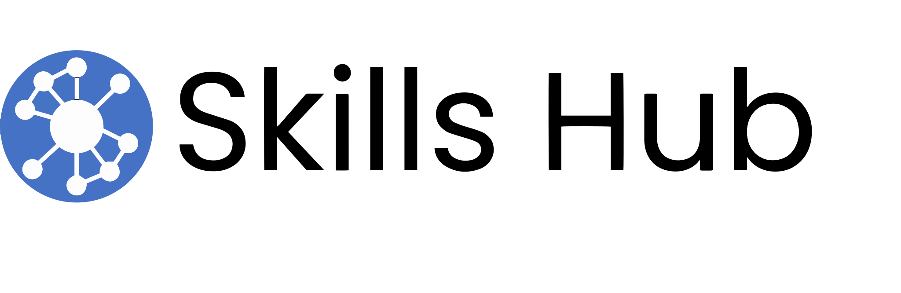
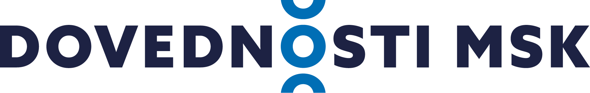
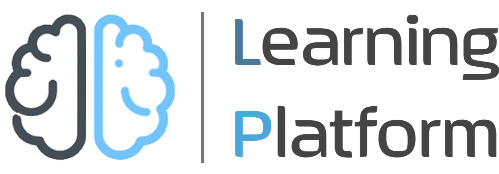

Skills Hub
Advanced digital solution for skills and workforce ecosystems.
SkillsTech Lab
Digital products and platforms connected to the lab's work on skills and workforce ecosystems and the delivery of needed skills.

Advanced digital solution for skills and workforce ecosystems.

Online skills and learning catalogue connecting courses, occupations, competences and training providers in the Moravian-Silesian Region.

Learning platform supporting digital delivery of needed skills.
Related research focus
AI-powered learning, adaptive learning, recommendation systems, personalised educational pathways, digital solutions, VR/XR, and recognition solutions including micro-credentials.